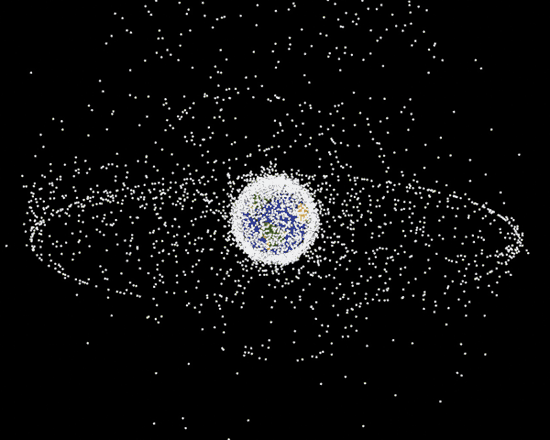

The purpose of this article is to explore the effects of space weather and determine if it’s a pressing problem. Space weather is a term that describes
events and conditions from the earth’s surface and magnetic field to the sun. Events such as solar flares, coronal mass ejections and solar radiation storms
can all affect electronics such as satellites and the electrical grid, they can also sometimes impact human health. There are many preventative methods that
can be utilised to reduce these impacts though to the extent of which they are significant may vary depending on the solar event. On the whole however the
preventative methods are improving which only increases their effectiveness for the future and extreme solar events are exceedingly rare, only occurring
a couple of times per solar cycle. This means that the overall significance of solar storms is quite moderate.
Introduction
Space weather is a relatively recent term that refers to ‘a chain of events/phenomena going from the Sun to interplanetary space to the magnetosphere,
ionosphere and atmosphere’ (Tsurutani et al., 2020).
Solar winds are the basic component of space weather and are defined as ‘a continuous outward stream of energetic charged particles from the Sun’s hot
corona’ (Lazar, 2012). The solar wind travels out away from the sun forming an elliptical shaped bubble known as the heliosphere.When solar wind reaches the earth it
is the charged particles that are deflected along the field lines of the earth’s magnetosphere, causing most of the solar wind to flow around the earth or be deflected
towards the poles. Space weather events such as solar flares or coronal mass ejections (CMEs) can cause the solar winds to increase, this will change how the solar wind
and the earth’s magnetosphere interact. (Fisher & Leon, 2006)
The effects of solar storms
Solar flares are expulsions of electromagnetic (EM) radiation - releasing radiation spanning the entire EM spectrum and can cause charged particles to accelerate .
A coronal mass ejection is an expulsion of coronal plasma, which can contain billions of tons of solar material. (NASAa, 2024) Solar flares and coronal mass ejections
often occur at the same time as they are caused by the same phenomenon and so their effects are often overlapped.
The effects of most solar flares are mostly limited to the earth’s upper atmosphere as the majority of electromagnetic radiation is absorbed in the ionosphere and the
accelerated charged particles are deflected by the magnetic field towards the poles. However this interaction in the ionosphere can result in communications and radio
blackouts additionally ‘ changes in the atmosphere can degrade satellite communications eg. the precision of Global Positioning System (GPS) measurements can be
degraded’. (NASAb, 2024)
The main impacts of CME’s revolve around their ability to cause a geomagnetic storm (GMS); this phenomenon occurs when the magnetically opposite ends of the earth and CME
align. This transfers energy into the magnetic field causing a geomagnetic storm(Tsurutani & Gonzalez, 1993). During this rapid variations in the magnetic field can
induce currents that flow through the electrical grid causes in damage to power lines and transformers which could lead to blackouts and require repair
(Cliver & Dietrich, 2013)
Solar flares and coronal mass ejections can cause another space weather phenomenon known as solar radiation storms (SRS), where solar energetic particles (SEPs) from the
sun and solar wind such as protons, electrons and heavier ions are accelerated towards the earth. This influx of charged particles increases the radiation levels near
earth to hazardous levels for astronauts in space or passengers of high altitude flights in polar regions and similarly to solar flares they can cause radio blackouts
though these tend to be localised to polar regions. Additionally SEPs can penetrate satellite electronics and cause damage to the internal circuits. ((CSE, 2024)
(see figure 1)
A common effect of all solar weather events is an increase in satellite drag which reduces their lifespan in orbit, this is because they lead to an increase in the temperature of the upper atmosphere and
particle density. (SWPCa, 2024)

Figure 1 - the white dots are representations of satellites in orbit around the earth, the ring around the equator is made up of geostationary satellites and these
are especially vulnerable to SEPs because of their distance from the earth. (NASAb, 2024)
Mitigation
A major component of reducing the damage of solar storms is modeling and forecasting, this is to provide the necessary time required to respond to a solar storm
(with the exception of solar flares as EM waves travel at light speed) and to predict the damage one might cause ahead of time. (solar storm mitigation, 2024)
The effects of solar storms on satellites in orbit can be partly reduced by utilizing structures and developing materials that can withstand the effects of
radiation - though this isn’t completely effective. Instead a much more effective method is to simply temporarily turn off any components that are susceptible
to the it hits - however this method is very reliant on an accurate ability to predict and model a geomagnetic storm. (Mehta, 2022)
On the ground level, infrastructure can be improved by including ‘transformer design standards that ensure a high level of GIC [geomagnetically induced currents]
resilience’ (Cliver & Dietrich, 2013) in order to withstand the sudden influx in voltage. One way in which this can be implemented is through faraday cages
which act as shields that dampens the current around equipment or through a large collection of capacitors to store the sudden influx of excess energy.
Although it is most effective to shut down localised areas before a storm hits. (Boyle, 2017)
The effects on the population are minimal for solar storms as the radiation does not reach beyond the upper atmosphere and so the main groups affected are astronauts
and occasionally high altitude polar flights - in which case flights will tend to be re-routed or postponed. Because of this, manufacturers are
‘designing spacecraft shielding to reduce radiation exposure, providing storm shelters for use during SPEs, carefully planning space missions to avoid as much radiation
as possible’. (Susan M. Bailey et al.)
Conclusion
Space weather poses a constant threat to our technological systems, due to humanity's heavy reliance on systems such as satellites and the electrical grid and it is
these areas that are most affected by solar storms. However, after carefully considering the academic literature regarding the preventative measures in place for such
events there is evidence to suffice that while the impacts may be severe, the danger posed by solar storms can be effectively managed so that their effects are lessened.
A major contributing factor to this conclusion is the continually improving detection of solar events that enable the mitigation methods to be effective combined with the
scarcity of solar storms that pose an extreme threat.